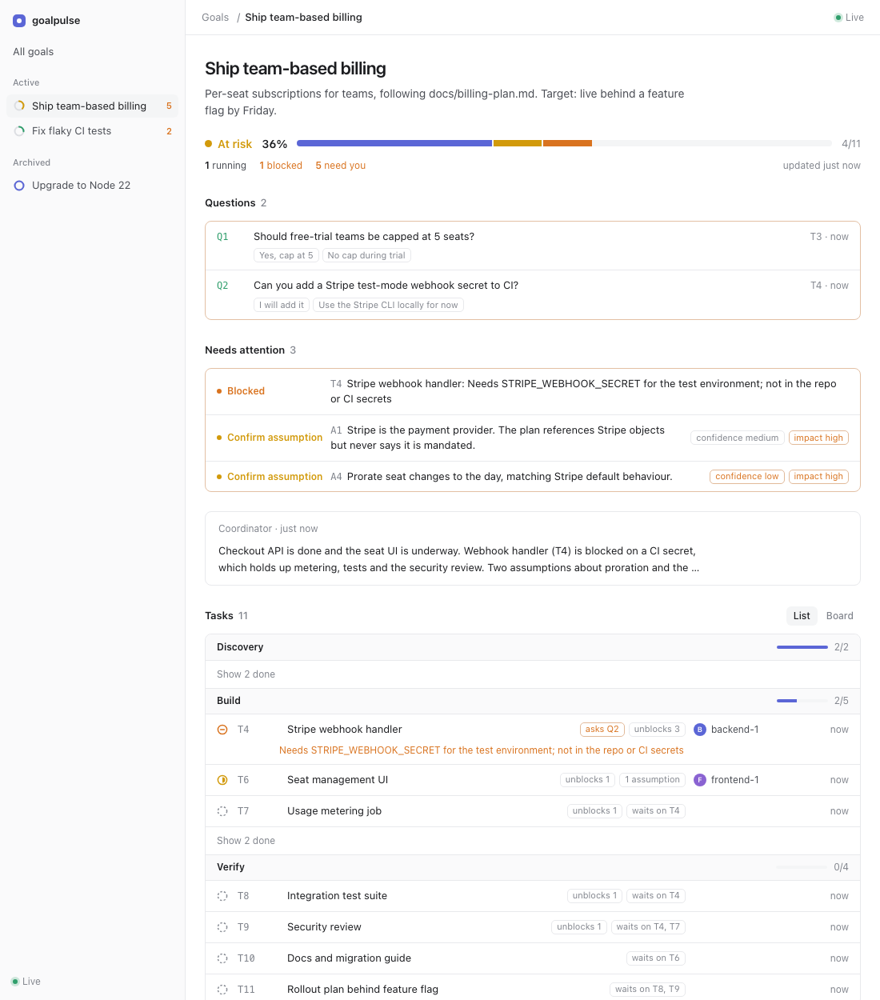

Agents in goal mode leave streams of text behind. GoalPulse turns their tasks, assumptions and questions into a live dashboard you can read at a glance.

Tell your agent to use it. It creates the goal, logs work as it goes and hands you a dashboard link.
docs/v2-plan.md and implement it phase by phase with sub-agents. Use goalpulse to report progress.A real run of the demo goal. Vertical 9:16 cut
Health, percent done and a segmented bar. Counts for running, blocked, failed and waiting on you, only when they are not zero.
Open questions and their options come first. Answered ones fold away. Blocked work and risky assumptions sit right below.
Tasks grouped by phase, in-flight work first, finished work folded. Rows show what each task waits on and what it unblocks.
The coordinator's note flags when tasks have changed since it was written, and live blockers override a stale "on track".
A fresh agent gets a briefing: plan, last report, stale in-flight work and your new answers.
Follows your system theme. goalpulse render writes a single HTML snapshot to share.
Node.js 18+. No other dependencies, nothing to configure.